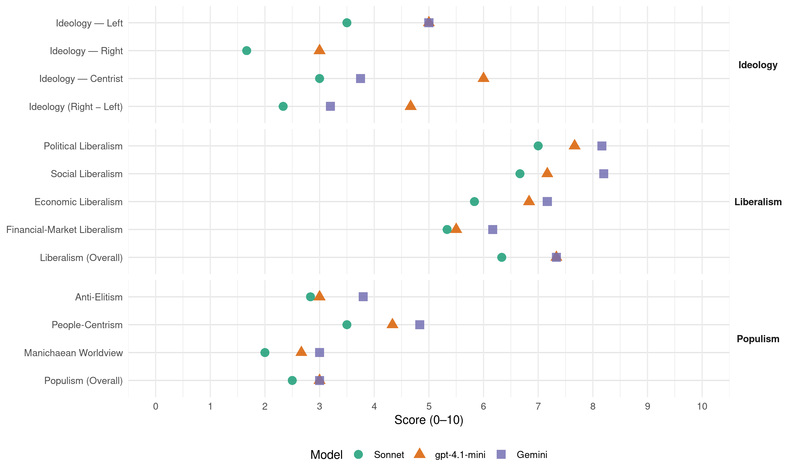

PUSC (Costa Rica, 1990)
manifesto_id 153521_199002
Get full text: This site shows derived annotations and short verbatim quotes only. The full manifesto text is © Manifesto Project / WZB — obtain it via manifesto-project.wzb.eu using the manifesto_id above.
Headline scores
| Dimension | Sonnet | gpt-4.1-mini | Gemini |
|---|---|---|---|
| Populism (Overall) | 2.5 | 3.0 | 3.0 |
| Anti-Elitism | 2.8 | 3.0 | 3.8 |
| People-Centrism | 3.5 | 4.3 | 4.8 |
| Manichaean Worldview | 2.0 | 2.7 | 3.0 |
| Ideology (Right − Left) | 2.3 | 4.7 | 3.2 |
| Liberalism (Overall) | 6.3 | 7.3 | 7.3 |
| Political Liberalism | 7.0 | 7.7 | 8.2 |
| Social Liberalism | 6.7 | 7.2 | 8.2 |
| Economic Liberalism | 5.8 | 6.8 | 7.2 |
| Financial-Market Liberalism | 5.3 | 5.5 | 6.2 |
Evidence per dimension
Economic Liberalism
Gemini · score 6.0 · verified · chunk 1
“coexistencia de distintas estructuras económicas y diversas formas de propiedad”
en lo económico ha de permitirla coexistencia de distintas estructuras económicas y diversas formas de propiedad, así como distintas
Gemini · score 8.0 · verified · chunk 2
“facilitar el desarrollo de la empresa privada”
y por ello debemos comprometernos a facilitar el desarrollo de la empresa privada en nuestro país.
Gemini · score 7.0 · verified · chunk 3
“eliminar cualquier tipo de control de precios sobre bienes”
eliminar cualquier tipo de control de precios sobre bienes y servicios y factores productivos, así como las cuotas y licencias a las importaciones.
Gemini · score 7.0 · verified · chunk 4
“participación de la empresa privada en estas actividades”
explotación del carbón que permita la participación de la empresa privada en estas actividades. d.Electricidad La falta de apoyo político
Gemini · score 7.0 · verified · chunk 5
“competencia entre las empresas”
adecuadas al menor precio, la competencia entre las empresas oferentes de vivienda. Las empresas por su parte
Gemini · score 8.0 · verified · chunk 6
“ingreso de nuestro país al GATT”
por lo tanto el Partido Unidad Social Cristiana apoya el ingreso de nuestro país al GATT.
gpt-4.1-mini · score 6.0 · verified · chunk 1
“la libertad económica forma parte de los principios socialcristianos que sustentan la vida en sociedad”
…La libertad económica forma parte de los principios socialcristianos que sustentan la vida en sociedad, y es un complemento esencial de la libertad política, pero se reconoce el derecho del Estado, y en determinados casos su deber, de orientar y regular su acción de las personas en su actividad económica para ajustarla al bien común, dentro del respecto a los derechos individuales y sociales que reconoce y tutela nuestro ordenamiento jurídico.
gpt-4.1-mini · score 7.0 · verified · chunk 2
“apoyo al empresario para que mediante sus valiosas iniciativas, contribuya directa y decididamente al desarrollo económico”
Apoyo al empresario para que mediante sus valiosas iniciativas, contribuya directa y decididamente al desarrollo económico, tecnológico y social del país. El pequeño, mediano y gran empresario costarricense, son fuente fundamental del bienestar de la sociedad
gpt-4.1-mini · score 7.0 · verified · chunk 3
“eliminar regulaciones innecesarias, monopolios estatales injustificados”
Para lograr un desarrollo industrial sostenido se hace necesario implantar los principios socialcristianos de desarrollo económico promoviendo sus mecanismos esenciales, eliminando regulaciones innecesarias, monopolios estatales injustificados, subvenciones encubiertas a actividades de futuro.
gpt-4.1-mini · score 7.0 · verified · chunk 4
“la inversión y al desarrollo serán mecanismos para impulsar”
…La conversión de deuda externa y la legislación de apoyo a la Inversión y al Desarrollo serán mecanismos para impulsar este importante segmento…
gpt-4.1-mini · score 6.0 · verified · chunk 5
“la máxima eficiencia en la aplicación de los programas”
En el próximo gobierno del Partido Unidad Social la Cristiana, los objetivos de la Caja Costarricense de Seguro Social se llevarán acabo mediante la máxima °eficiencia en la aplicación de los programas, evitando duplicidad de servicios con dcon otras instituciones de salud, con las cuales mantendrá una política de cooperación y de apoyo.
gpt-4.1-mini · score 8.0 · verified · chunk 6
“clima político, social y económico favorable a la inversión privada tanto nacional como extranjera”
En este sentido, el interés del país demanda en la actual coyuntura, un clima político, social y económico favorable a la inversión privada tanto nacional como extranjera. De ahí que el Servicio Diplomático y Consular de Costa Rica deberá no sólo realizar tareas políticas y culturales, sino también, y con igual prioridad. promover nuevas posibilidades financieras, turísticas y comerciales.
Sonnet · score 5.0 · verified · chunk 1
“libertad económica forma parte de los principios”
La libertad económica forma parte de los principios socialcristianos que sustentan la vida en sociedad, y es un complemento esencial de la libertad política, pero se reconoce el derecho del Estado
Sonnet · score 6.0 · verified · chunk 2
“Estímulo a este sector para que sea uno de los ejes”
Estímulo a este sector para que sea uno de los ejes de la producción para la satisfacción de necesidades básicas, con base en criterios de eficiencia
Sonnet · score 6.0 · verified · chunk 3
“eliminando regulaciones innecesarias, monopolios estatales injustificados”
se hace necesario implantar los principios socialcristianos de desarrollo económico promoviendo sus mecanismos esenciales, eliminando regulaciones innecesarias, monopolios estatales injustificados
Sonnet · score 6.0 · verified · chunk 4
“política que tienda hacia cielos más abiertos”
el PUSC impulsará una política que tienda hacia cielos más abiertos; en donde se amplíe el abanico de alternativas para los visitantes
Sonnet · score 6.0 · verified · chunk 5
“competencia entre las empresas oferentes de vivienda”
Se considera indispensable, para obtener las soluciones más adecuadas al menor precio, la competencia entre las empresas oferentes de vivienda
Sonnet · score 6.0 · verified · chunk 6
“favorable a la inversión privada”
el interés del país demanda en la actual coyuntura, un clima político, social y económico favorable a la inversión privada tanto nacional como extranjera
Financial-Market Liberalism
Gemini · score 5.0 · verified · chunk 1
“regular la banca privada y entidades financieras”
banca estatal, para que funcione con eficacia y eficiencia en beneficio social, además de regular la banca privada y entidades financieras en general.
Gemini · score 6.0 · verified · chunk 2
“menor intervención gubernamental en los mercados financieros”
y de préstamos externos y una menor intervención gubernamental en los mercados financieros del país), ajustes en el esquema
Gemini · score 7.0 · verified · chunk 3
“fomentar la creación de sociedades de inversión y las empresas de capital abierto”
la ley de mercado de valores reformas al Código de Comercio que se encuentra en trámite en la Asamblea Legislativa, para entre otras cosas, fomentar la creación de sociedades de inversión y las empresas de capital abierto
Gemini · score 6.0 · verified · chunk 4
“conversión de deuda externa y la legislación de apoyo a la Inversión”
Turismo de Aventuras y Pesca Deportiva. El PUSC consciente de esta realidad; apoyará la creación de un Plan General de Desarrollo del ECOTURISMO, en donde participen las Instituciones públicas, organizaciones y entidades privadas relacionadas, para que se dé el mejor y más ordenado desarrollo en este campo. La conversión de deuda externa y la legislación de apoyo a la Inversión y al Desarrollo serán mecanismos para impulsar este importante segmento.
Gemini · score 6.0 · verified · chunk 5
“invertirá en vivienda a tasas de mercado”
necesidades del régimen de pensiones, por lo que se invertirá en vivienda a tasas de mercado. Por otra parte, en cuanto a su
Gemini · score 7.0 · verified · chunk 6
“renegociación de su déuda externa”
Costa Rica procurará obtener mejores términos y condiciones de renegociación de su déuda externa, con base no sólo en sus condiciones políticas
gpt-4.1-mini · score 5.0 · verified · chunk 1
“el perfeccionamiento de la banca estatal, para que funcione con eficacia y eficiencia en beneficio social, además de regular la banca privada y entidades financieras en general”
…En el ejercicio del principio de complementación,corresponde al Estado la realización de funciones tan importantes como: 4. El perfeccionamiento de la banca estatal, para que funcione con eficacia y eficiencia en beneficio social, además de regular la banca privada y entidades financieras en general.
gpt-4.1-mini · score 6.0 · verified · chunk 3
“Ley de Mercado de Valores, la reducción de los,márgenes de intermediación financiera”
Es conveniente que como parte del programa de Ajuste Estructural se implanten un conjunto de medidas que lleven a una reduccion de las tasas de interés, la reducción de impuestos a los títulos valores y a los dividendos, la Ley del Mercado de Valores, la reducción de los,márgenes de intermediación financiera colocación como una disminución de la colocacionmasiva de bonos del Gobierno y del Banco Central en los mercados financieros.
Sonnet · score 5.0 · verified · chunk 1
“perfeccionamiento de la banca estatal”
El perfeccionamiento de la banca estatal, para que funcione con eficacia y eficiencia en beneficio social, además de regular la banca privada y entidades financieras en general
Sonnet · score 6.0 · verified · chunk 2
“caída en la tasa de interés”
se buscará orientarlo hacia asegurar una mayor eliminación de distorsiones y una caída en la tasa de interés (mediante recursos del PAE y de préstamos externos y una menor intervención gubernamental en los mercados financieros del país)
Sonnet · score 6.0 · verified · chunk 3
“fomentar la creación de sociedades de inversión”
aprobar con las modificaciones que sean del caso, la ley de mercado de valores reformas al Código de Comercio… para entre otras cosas, fomentar la creación de sociedades de inversión y las empresas de capital abierto
Sonnet · score 5.0 · verified · chunk 4
“estructura financiera adecuada para la canalización”
Se establecerá además una estructura financiera adecuada para la canalización de recursos económicos (internos y externos) hacia proyectos ubicados en litorales
Sonnet · score 5.0 · verified · chunk 5
“fondo se invertirá en vivienda a tasas de mercado”
debe ser no solamente recuperable sino creciente de acuerdo a las necesidades del régimen de pensiones, por lo que se invertirá en vivienda a tasas de mercado
Sonnet · score 5.0 · verified · chunk 6
“relaciones comerciales y financieras externas”
es además indispensable promover e intensificar las relaciones comerciales y financieras externas bilaterales y multilaterales
Political Liberalism
Gemini · score 8.0 · verified · chunk 1
“respetar celosamente la independencia del Poder Judicial”
reitera su compromiso de respetar celosamente la independencia del Poder Judicial contenida en el articulo
Gemini · score 9.0 · verified · chunk 2
“respetar celosamente la independencia del Poder Judicial”
el PUSC reitera su compromiso de respetar celosamente la independencia del Poder Judicial contenida en el articulo 177
Gemini · score 7.0 · verified · chunk 3
“despolitización de las Juntas Directivas de los bancos del Estado”
La igualdad de acceso al crédito y la despolitización de las Juntas Directivas de los bancos del Estado se debe garantizar para lograr el uso más eficiente
Gemini · score 8.0 · verified · chunk 4
“vivencia de la democracia costarricense”
Educar para la vivencia de la democracia costarricense, en un ambiente fecundo de los valores
Gemini · score 8.0 · verified · chunk 5
“vigencia de la democracia”
no podemos hablar seria y responsablemente sobre vigencia de la democracia. Los valores fundamentales que inspiran
Gemini · score 9.0 · verified · chunk 6
“vigencia de la democracia”
no habrá verdadera igualdad; y sin igualdad, no podemos hablar seria y responsablemente sobre vigencia de la democracia.
gpt-4.1-mini · score 8.0 · verified · chunk 1
“la acción política debe estar orientada hacia los valores y regida por metas de carácter ético”
…Reiteramos el compromiso del Partido Unidad Social Cristiana en la tarea por la realización plena de los valores fundamentales que son la base de nuestra concepción del hombre, de la sociedad y del desarrollo que queremos. La acción política debe estar orientada hacia los valores y regida por metas de carácter ético, que le permitan a la persona, en forma libre y responsable, desplegar su capacidad creadora en armonía con el interés general de la sociedad.
gpt-4.1-mini · score 8.0 · verified · chunk 2
“La vigilancia plena de la Democracia en un moderno Estado de Derecho requiere de un gobierno ejercido por Poderes distintos y totalmente independiente entre sí”
La vigilancia plena de la Democracia en un moderno Estado de Derecho requiere de un gobierno ejercido por Poderes distintos y totalmente independiente entre sí. El mandato contenido en el artículo 9 de nuestra Constitución Política señala el necesario y delicado equilibrio entre los tres poderes que conforman el Gobierno de nuestra República
gpt-4.1-mini · score 7.0 · verified · chunk 3
“democracia y las condiciones privilegiadas de Costa Rica”
El PUSC considera que la promoción debe hacer énfasis en los grandes atractivos naturales con que contamos en nuestra democracia y las condiciones privilegiadas de Costa Rica y que se debe incentivar económicamente a los “tour’ operadores nacionales.
gpt-4.1-mini · score 7.0 · verified · chunk 4
“la democracia y las condiciones privilegiadas de Costa Rica”
…la promoción debe hacer énfasis en los grandes atractivos naturales con que contamos en nuestra democracia y las condiciones privilegiadas de Costa Rica y que se debe incentivar económicamente a los “tour’ operadores nacionales…
gpt-4.1-mini · score 7.0 · verified · chunk 5
“la dignidad de la persona humana como acción prioritaria”
La dignidad de la persona humana como acción prioritaria, será satisfecha en la medida que se otorguen a los ciudadanos las facilidades para su educación, su libre expresión del pensamiento, las oportunidades propicias para su auto-realización, su nutrición balanceada que satisfaga los requerimientos específicos; la prevención de las enfermedades; la recuperación, tratamiento oportuno rehabilitación de su salud.
gpt-4.1-mini · score 9.0 · verified · chunk 6
“verdadera igualdad; y sin igualdad, no podemos hablar seria y responsablemente sobre vigencia de la democracia”
El Partido Unidad Social Cristiana postula firmemente que en tanto exista en nuestra sociedad discriminación contra la mujer, no habrá verdadera igualdad; y sin igualdad, no podemos hablar seria y responsablemente sobre vigencia de la democracia. Los valores fundamentales que inspiran la ideología socialcristiana comprometen a nuestro Partido en la acción decidida propuesta por las Naciones Unidas en su “Convención sobre la eliminación de todas las formas de discriminación la República.
Sonnet · score 7.0 · verified · chunk 1
“independencia del Poder Judicial”
el PUSC reitera su compromiso de respetar celosamente la independencia del Poder Judicial contenida en el articulo 177 de la Constitución Política
Sonnet · score 8.0 · verified · chunk 2
“independencia del Poder Judicial contenida en el articulo 177”
el PUSC reitera su compromiso de respetar celosamente la independencia del Poder Judicial contenida en el articulo 177 de la Constitución Política
Sonnet · score 6.0 · verified · chunk 3
“despolitización de las Juntas Directivas de los bancos”
La igualdad de acceso al crédito y la despolitización delas Juntas Directivas de los bancos del Estado se debe garantizar para lograr el uso más eficiente
Sonnet · score 7.0 · verified · chunk 4
“legado democrático nacional”
fundamenta su política educativa en los principios rectores del socialcristianismo, en el legado democrático nacional y en la ineludible actualización que el proceso demanda
Sonnet · score 6.0 · verified · chunk 5
“institucionalidad democrática costarricense”
sin detrimento del Bien común ni de la institucionalidad democrática costarricense
Sonnet · score 8.0 · verified · chunk 6
“Paz, la Libertad, la Justicia y la Democracia”
principios generales de la política exterior del Partido Unidad Social Cristiana se basan en los conceptos de Paz, la Libertad, la Justicia y la Democracia
Liberalism (Overall)
Gemini · score 7.0 · verified · chunk 1
“respetar celosamente la independencia del Poder Judicial”
reitera su compromiso de respetar celosamente la independencia del Poder Judicial contenida en el articulo
Gemini · score 8.0 · verified · chunk 2
“respetar celosamente la independencia del Poder Judicial”
el PUSC reitera su compromiso de respetar celosamente la independencia del Poder Judicial contenida en el articulo 177
Gemini · score 7.0 · verified · chunk 3
“eliminar cualquier tipo de control de precios sobre bienes”
eliminar cualquier tipo de control de precios sobre bienes y servicios y factores productivos, así como las cuotas y licencias a las importaciones.
Gemini · score 7.0 · verified · chunk 4
“vivencia de la democracia costarricense”
Educar para la vivencia de la democracia costarricense, en un ambiente fecundo de los valores
Gemini · score 7.0 · verified · chunk 5
“vigencia de la democracia”
no podemos hablar seria y responsablemente sobre vigencia de la democracia. Los valores fundamentales que inspiran
Gemini · score 8.0 · verified · chunk 6
“vigencia de la democracia”
no habrá verdadera igualdad; y sin igualdad, no podemos hablar seria y responsablemente sobre vigencia de la democracia.
gpt-4.1-mini · score 7.0 · verified · chunk 1
“la acción política debe estar orientada hacia los valores y regida por metas de carácter ético”
…Reiteramos el compromiso del Partido Unidad Social Cristiana en la tarea por la realización plena de los valores fundamentales que son la base de nuestra concepción del hombre, de la sociedad y del desarrollo que queremos. La acción política debe estar orientada hacia los valores y regida por metas de carácter ético, que le permitan a la persona, en forma libre y responsable, desplegar su capacidad creadora en armonía con el interés general de la sociedad.
gpt-4.1-mini · score 7.0 · verified · chunk 2
“La vigilancia plena de la Democracia en un moderno Estado de Derecho requiere de un gobierno ejercido por Poderes distintos y totalmente independiente entre sí”
La vigilancia plena de la Democracia en un moderno Estado de Derecho requiere de un gobierno ejercido por Poderes distintos y totalmente independiente entre sí. El mandato contenido en el artículo 9 de nuestra Constitución Política señala el necesario y delicado equilibrio entre los tres poderes que conforman el Gobierno de nuestra República
gpt-4.1-mini · score 7.0 · verified · chunk 3
“Ley de Mercado de Valores, la reducción de los,márgenes de intermediación financiera”
Es conveniente que como parte del programa de Ajuste Estructural se implanten un conjunto de medidas que lleven a una reduccion de las tasas de interés, la reducción de impuestos a los títulos valores y a los dividendos, la Ley del Mercado de Valores, la reducción de los,márgenes de intermediación financiera colocación como una disminución de la colocacionmasiva de bonos del Gobierno y del Banco Central en los mercados financieros.
gpt-4.1-mini · score 7.0 · verified · chunk 4
“la democracia y las condiciones privilegiadas de Costa Rica”
…la promoción debe hacer énfasis en los grandes atractivos naturales con que contamos en nuestra democracia y las condiciones privilegiadas de Costa Rica y que se debe incentivar económicamente a los “tour’ operadores nacionales…
gpt-4.1-mini · score 7.0 · verified · chunk 5
“la dignidad de la persona humana como acción prioritaria”
La dignidad de la persona humana como acción prioritaria, será satisfecha en la medida que se otorguen a los ciudadanos las facilidades para su educación, su libre expresión del pensamiento, las oportunidades propicias para su auto-realización, su nutrición balanceada que satisfaga los requerimientos específicos; la prevención de las enfermedades; la recuperación, tratamiento oportuno rehabilitación de su salud.
gpt-4.1-mini · score 9.0 · verified · chunk 6
“verdadera igualdad; y sin igualdad, no podemos hablar seria y responsablemente sobre vigencia de la democracia”
El Partido Unidad Social Cristiana postula firmemente que en tanto exista en nuestra sociedad discriminación contra la mujer, no habrá verdadera igualdad; y sin igualdad, no podemos hablar seria y responsablemente sobre vigencia de la democracia.
Sonnet · score 6.0 · verified · chunk 1
“perfeccionamiento del sistema de libertad y democracia”
Abogamos con firmeza por los principios del humanismo cristiano; por el perfeccionamiento del sistema de libertad y democracia costarricense
Sonnet · score 7.0 · verified · chunk 2
“independencia del Poder Judicial contenida en el articulo 177”
el PUSC reitera su compromiso de respetar celosamente la independencia del Poder Judicial contenida en el articulo 177 de la Constitución Política
Sonnet · score 6.0 · verified · chunk 3
“eliminando regulaciones innecesarias, monopolios estatales injustificados”
se hace necesario implantar los principios socialcristianos de desarrollo económico promoviendo sus mecanismos esenciales, eliminando regulaciones innecesarias, monopolios estatales injustificados
Sonnet · score 6.0 · verified · chunk 4
“Empresa Privada debe jugar un papel muy importante”
Consideramos que la Empresa Privada debe jugar un papel muy importante en las etapas de planeamiento y ejecución de las políticas a seguir
Sonnet · score 6.0 · verified · chunk 5
“libertad de creación, interpretación y circulación”
El Estado es garante de la libertad de creación, interpretación y circulación de los bienes artísticos y literarios
Sonnet · score 7.0 · verified · chunk 6
“libertades del individuo”
el Partido Unidad Social Cristiana reitera su convicción de que no puede haber progreso económico efectivo sin respeto a las libertades del individuo
Anti-Elitism
Gemini · score 4.0 · verified · chunk 1
“favorecer ciertos grupos afines al Partido Liberación Nacional”
crecimiento económico y favorecer ciertos grupos afines al Partido Liberación Nacional. Una de las manifestaciones
Gemini · score 4.0 · verified · chunk 2
“grave crisis moral de la actual administración”
La realidad nacional, que día a día pone de manifiesto la grave crisis moral de la actual administración y del Partido Liberación Nacional
Gemini · score 3.0 · verified · chunk 3
“desfase entre la aplicación de la política económica, impulsada por el gobierno liberacionista”
El ejecución del Programa de Ajuste Estructural (PAE) vino a provocar un mayor desfase entre la aplicación de la política económica, impulsada por el gobierno liberacionista -que ha privilegiado en las dos ultimas administraciones
Gemini · score 4.0 · verified · chunk 5
“frenar los centros privilegiados de ejercicio del poder”
recobren esos espacios de libertad y frenar los centros privilegiados de ejercicio del poder, creados a través de todo un engranaje
Gemini · score 4.0 · verified · chunk 6
“corrupción de altos funcionarios”
Lo más alarmante han sido las graves y continuas denuncias de corrupción de altos funcionarios y de aquellos casos odiosos de asociación al narcotráfico
gpt-4.1-mini · score 3.0 · verified · chunk 1
“la mayoría de las industrias basaron su crecimiento en el mercado interno y el Mercado Común Centroamericano, lo que llegó a su límite al final de la década de 1970”
…limitando sus posibilidades de expansión a esos mercados. Ahí esta una de las principales limitaciones de nuestro crecimiento. Por otra parte, el sector agropecuario aún presenta una gran heterogeneidad respecto a la eficacia de sus empresas en la que distintos tipos de productores tienen niveles diferentes de acceso a recursos productivos e incentivos económicos.
gpt-4.1-mini · score 4.0 · verified · chunk 2
“la grave crisis moral de la actual administración y del Partido Liberación Nacional”
La realidad nacional, que día a día pone de manifiesto la grave crisis moral de la actual administración y del Partido Liberación Nacional, requiere de la adopción inmediata del proyecto de Ley que presentó nuestro Partido para la creación de la “procuraduría contra la corrupción”
gpt-4.1-mini · score 2.0 · verified · chunk 3
“ausencia de políticas definidas y falta de decisión política”
El Sistema Aduanero tiene grandes fallas no necesariamente por culpa de quienes laboran en ellas, sino por ausencia de políticas definidas y falta de decisión política para enfrentar los problemas.
Sonnet · score 3.0 · verified · chunk 1
“gobiernos sin rumbo fijo”
señalan los problemas actuales de la Costa Rica en crisis, después de ocho años de gobiernos sin rumbo fijo, propone las soluciones
Sonnet · score 4.0 · verified · chunk 2
“la grave crisis moral de la actual administración”
La realidad nacional, que día a día pone de manifiesto la grave crisis moral de la actual administración y del Partido Liberación Nacional, requiere de la adopción inmediata
Sonnet · score 2.0 · verified · chunk 3
“improvisación y el constante cambio de directrices”
el Sector Agropecuario Costarricense en los últimos dos gobiernos ha carecido, por completa de una política clara y estructurada… tomando su lugar la improvisación y el constante cambio de directrices
Sonnet · score 1.0 · verified · chunk 4
“falta de decisión política que ha impedido”
Los planes para explorar y explotar petróleo de origen nacional, se han visto obstaculizados por falta de decisión política que ha impedido aprobar un marco legal
Sonnet · score 4.0 · verified · chunk 5
“el Partido Liberación Nacional vino a impedir la solución”
nuevamente el Partido Liberación Nacional vino a impedir la solución: modificó el proyecto para asignar solamente el 25%
Sonnet · score 3.0 · verified · chunk 6
“grandes intereses económicos y políticos”
cuando la banca nacionalizada está afectada por grandes intereses económicos y políticos y se olvida del pueblo
Ideology — Centrist
Gemini · score 4.0 · verified · chunk 1
“devolverle al pueblo costarricense la confianza”
el compromiso de devolverle al pueblo costarricense la confianza en sus gobernantes.
Gemini · score 4.0 · verified · chunk 2
“devolverle al pueblo costarricense la confianza”
cumplir con el compromiso de devolverle al pueblo costarricense la confianza en sus gobernantes.
Gemini · score 3.0 · verified · chunk 3
“desfase entre la aplicación de la política económica, impulsada por el gobierno liberacionista”
El ejecución del Programa de Ajuste Estructural (PAE) vino a provocar un mayor desfase entre la aplicación de la política económica, impulsada por el gobierno liberacionista -que ha privilegiado en las dos ultimas administraciones
Gemini · score 4.0 · verified · chunk 5
“salvaguardar la salud de nuestro pueblo”
no tiene más objetivo que el de proporcionar y salvaguardar la salud de nuestro pueblo, por lo tanto cualquier iniciativa
gpt-4.1-mini · score 7.0 · verified · chunk 1
“la democracia que concebimos debe ser pluralista en lo social, en lo ideológico y en lo económico”
…La democracia, como forma de organización política sustentada en la voluntad popular, reclama para su existencia real la constante expresión y organización de esa voluntad. Además, el ser humano individual o colectivamente aglutinado, por su rica potencialidad, se expresa en formas muy diversas, las cuales deben coexistir dentro de un clima de tolerancia recíproca.
gpt-4.1-mini · score 6.0 · verified · chunk 2
“devolver al pueblo la tranquilidad y serenidad mediante la presencia efectiva de la policía en las calles protegiendo a la ciudadanía”
Los esfuerzos conjuntos y la obtención del mayor rendimiento de los recursos disponibles, vendrán a garantizar una mejor y efectiva labor orientada a devolver al pueblo la tranquilidad y serenidad mediante la presencia efectiva de la policía en las calles protegiendo a la ciudadanía y no encuarteladas como se han visto en los últimos gobiernos
gpt-4.1-mini · score 5.0 · verified · chunk 3
“solidaridad y concertación”
Nuestro Partido defiende una política de reconversión basada en dos principios fundamentales: Solidaridad y Concertación.
Sonnet · score 3.0 · verified · chunk 1
“democracia política, social y económica”
el Estado promueva la producción garantizando el bien común en el marco de una sociedad que busque permanentemente una verdadera y real democracia política, social y económica
Sonnet · score 4.0 · verified · chunk 2
“devolverle al pueblo costarricense la confianza en sus gobernantes”
de cumplir con el compromiso de devolverle al pueblo costarricense la confianza en sus gobernantes. POR LA RESTAURACION DE LA JUSTICIA
Sonnet · score 3.0 · verified · chunk 3
“principios socialcristianos de desarrollo económico”
se hace necesario implantar los principios socialcristianos de desarrollo económico promoviendo sus mecanismos esenciales, eliminando regulaciones innecesarias
Sonnet · score 2.0 · verified · chunk 4
“coordinación del sector oficial-sector privado”
los esfuerzos se realicen con el propósito de capitalizar la capacidad ociosa con que se cuenta en la temporada baja, por lo que la coordinación del sector oficial-sector privado es imprescindible
Sonnet · score 3.0 · verified · chunk 5
“principio de solidaridad humana ha permitido a toda la población”
La aplicación del principio de solidaridad humana ha permitido a toda la población, recibir atención médica
Sonnet · score 3.0 · verified · chunk 6
“el futuro es de todos”
nuestro compromiso solemne es la búsqueda del desarrollo económico con justicia social… porque el futuro es de todos
Ideology — Left
Gemini · score 5.0 · verified · chunk 2
“democracia económica mediante la participación mayoritaria”
buscará lograr, en forma más efectiva, la democracia económica mediante la participación mayoritaria de los trabajadores en actividades productivas.
Gemini · score 5.0 · verified · chunk 6
“equitativa distribución de la riqueza”
Es un sentido solidario el que nos lleva a proponer reformas sociales para la equitativa distribución de la riqueza, el disfrute del bien común
gpt-4.1-mini · score 6.0 · verified · chunk 1
“la justicia social exige medidas de compensación a favor de aquellos que en otro caso quedarían rezagados”
…La justicia social exige medidas de compensación a favor de aquellos que en otro caso quedarían rezagados. La cooperación está destinada especialmente a aquellas personas que no tienen la suficiente capacidad para ayudarse a si mismas y no pueden representar o hacer valer de forma efectiva y pública sus intereses, necesidades o aspiraciones.
gpt-4.1-mini · score 5.0 · verified · chunk 2
“promoción de la eficiencia económica sin que se sacrifiquen innecesariamente los sectores productivos y sociales del país”
Promoción de la eficiencia económica (más producción de bienes y servicios con los costos mínimos posibles y mejor calidad) sin que se sacrifiquen innecesariamente los sectores productivos y sociales del país
gpt-4.1-mini · score 4.0 · verified · chunk 3
“promover la justicia, social”
El gasto se dirigirá a fortalecer la reactivación de la producción, estimular la reconversión productiva, apoyar el desarrollo científico y tecnológico nacional y promover la justicia, social.
Sonnet · score 4.0 · verified · chunk 1
“desigual distribución del ingreso”
Desigual distribución de la riqueza… la distribución del ingreso revelaba una repartición de la riqueza bastante desequilibrada… desigual distribución del ingreso
Sonnet · score 3.0 · verified · chunk 2
“democracia económica mediante la participación mayoritaria”
buscará lograr, en forma más efectiva, la democracia económica mediante la participación mayoritaria de los trabajadores en actividades productivas
Sonnet · score 4.0 · verified · chunk 3
“democratizar la economía y mantener las mas justa distribución”
La riqueza bananera debe ser aprovechada para democratizar la economía y mantener las mas justa distribución de la tierra
Sonnet · score 2.0 · verified · chunk 4
“personas de menores recursos puedan adquirir”
deberán posibilitar que las personas de menores recursos puedan adquirir un mínimo adecuado de los principales y esenciales servicios, con un criterio solidario
Sonnet · score 5.0 · verified · chunk 5
“salario se adecuará al costo real de la vida”
En nuestro Gobierno, el salario se adecuará al costo real de la vida, incrementándose además en aquellos rubros
Sonnet · score 3.0 · verified · chunk 6
“equitativa distribución de la riqueza”
reformas sociales para la equitativa distribución de la riqueza, el disfrute del bien común, las oportunidades educativas
Ideology (Right − Left)
Gemini · score 3.0 · verified · chunk 1
“devolverle al pueblo costarricense la confianza”
el compromiso de devolverle al pueblo costarricense la confianza en sus gobernantes.
Gemini · score 4.0 · verified · chunk 2
“democracia económica mediante la participación mayoritaria”
buscará lograr, en forma más efectiva, la democracia económica mediante la participación mayoritaria de los trabajadores en actividades productivas.
Gemini · score 2.0 · verified · chunk 3
“desfase entre la aplicación de la política económica, impulsada por el gobierno liberacionista”
El ejecución del Programa de Ajuste Estructural (PAE) vino a provocar un mayor desfase entre la aplicación de la política económica, impulsada por el gobierno liberacionista -que ha privilegiado en las dos ultimas administraciones
Gemini · score 3.0 · verified · chunk 5
“frenar los centros privilegiados de ejercicio del poder”
recobren esos espacios de libertad y frenar los centros privilegiados de ejercicio del poder, creados a través de todo un engranaje
Gemini · score 4.0 · verified · chunk 6
“equitativa distribución de la riqueza”
Es un sentido solidario el que nos lleva a proponer reformas sociales para la equitativa distribución de la riqueza, el disfrute del bien común
gpt-4.1-mini · score 5.0 · verified · chunk 1
“la democracia que concebimos debe ser pluralista en lo social, en lo ideológico y en lo económico”
…La democracia, como forma de organización política sustentada en la voluntad popular, reclama para su existencia real la constante expresión y organización de esa voluntad. Además, el ser humano individual o colectivamente aglutinado, por su rica potencialidad, se expresa en formas muy diversas, las cuales deben coexistir dentro de un clima de tolerancia recíproca.
gpt-4.1-mini · score 5.0 · verified · chunk 2
“la grave crisis moral de la actual administración y del Partido Liberación Nacional”
La realidad nacional, que día a día pone de manifiesto la grave crisis moral de la actual administración y del Partido Liberación Nacional, requiere de la adopción inmediata del proyecto de Ley que presentó nuestro Partido para la creación de la “procuraduría contra la corrupción”
gpt-4.1-mini · score 4.0 · verified · chunk 3
“promover la justicia, social”
El gasto se dirigirá a fortalecer la reactivación de la producción, estimular la reconversión productiva, apoyar el desarrollo científico y tecnológico nacional y promover la justicia, social.
Sonnet · score 2.0 · verified · chunk 1
“Desarrollo Económico con justicia social”
¡Desarrollo Económico con justicia social! … III NUEVA ESTRATEGIA: Desarrollo económico con justicia social
Sonnet · score 3.0 · verified · chunk 2
“la grave crisis moral de la actual administración”
La realidad nacional, que día a día pone de manifiesto la grave crisis moral de la actual administración y del Partido Liberación Nacional
Sonnet · score 2.0 · verified · chunk 3
“principios socialcristianos de desarrollo económico”
se hace necesario implantar los principios socialcristianos de desarrollo económico promoviendo sus mecanismos esenciales, eliminando regulaciones innecesarias
Sonnet · score 1.0 · verified · chunk 4
“principios rectores del socialcristianismo”
fundamenta su política educativa en los principios rectores del socialcristianismo, en el legado democrático nacional
Sonnet · score 4.0 · verified · chunk 5
“familias de menores recursos económicos”
mejorar el nivel de vida de los costarricenses, en especial de los de menores recursos económicos
Sonnet · score 2.0 · verified · chunk 6
“desarrollo económico con justicia social”
Nuestro compromiso solemne es la búsqueda del desarrollo económico con justicia social, dentro de un marco de valores éticos
Ideology — Right
gpt-4.1-mini · score 3.0 · verified · chunk 1
“debemos ser cuidadosos en la protección de los valores culturales y sociales que nos son propios y que han forjado nuestra nacionalidad”
…Aún admitiendo la existencia y expresión de ideas y culturas diferentes, debemos ser cuidadosos en la protección de los valores culturales y sociales que nos son propios y que han forjado nuestra nacionalidad. La obra común del desarrollo se da en una democracia mediante la contribución solidaria, generosa y creativa, de sus miembros; nunca mediante la imposición irracional de un sólo grupo político o una clase privilegiada.
Sonnet · score 1.0 · verified · chunk 1
“valores culturales y sociales que nos son propios”
debemos ser cuidadosos en la protección de los valores culturales y sociales que nos son propios y que han forjado nuestra nacionalidad
Sonnet · score 2.0 · verified · chunk 2
“personas o grupos que puedan dañar la integridad”
evitar el ingreso de personas o grupos que puedan dañar la integridad del Estado
Sonnet · score 2.0 · verified · chunk 3
“nuestra idiosincrasia y nuestras buenas costumbres”
para que no se perjudiquen los recursos naturales y se guarde equilibrio con nuestra idiosincrasia y nuestras buenas costumbres
Sonnet · score 1.0 · verified · chunk 4
“idiosincrasia, costumbres y moral de este país”
vigilando para que no sea aprovechado por algunos poco, para fines que atenten contra la idiosincrasia, costumbres y moral de este país
Sonnet · score 2.0 · verified · chunk 5
“mística socialcristiana del ejercicio de la función pública”
Se requerirá crear una mística socialcristiana del ejercicio de la función pública, revalorizando la imagen
Sonnet · score 2.0 · verified · chunk 6
“rescate de la cultura folklórica”
Se desea no sólo despertar un movimiento cultural sino el rescate de la cultura folklórica de nuestro país
Manichaean Worldview
Gemini · score 3.0 · verified · chunk 2
“al ciudadano a Merced de los antisociales”
La falta de interés de los Gobiernos hapuesto al ciudadano a Merced de los antisociales en todos los centros de comercio
Gemini · score 3.0 · verified · chunk 6
“trama perversa y sin fin”
Por la naturaleza de su acción, el corrupto va involucrando a otros, tal vez inocentes, en una trama perversa y sin fin.
gpt-4.1-mini · score 2.0 · verified · chunk 1
“la crisis política y militar en Centroamérica. Esta crisis, que aún no termina, afecta aún más al debilitado proceso integracionista”
…de 1970 surge, con gran intensidad, la crisis política y militar en Centroamérica. Esta crisis, que aún no termina, afecta aún más al debilitado proceso integracionista y redujo el nivel de comercio entre los países del Istmo Centroamericano a cifras logradas en los inicios de la década de 1970.
gpt-4.1-mini · score 4.0 · verified · chunk 2
“la grave crisis moral de la actual administración y del Partido Liberación Nacional”
La realidad nacional, que día a día pone de manifiesto la grave crisis moral de la actual administración y del Partido Liberación Nacional, requiere de la adopción inmediata del proyecto de Ley que presentó nuestro Partido para la creación de la “procuraduría contra la corrupción”
gpt-4.1-mini · score 2.0 · verified · chunk 3
“problemas económicos, entrelos que destacan”
La temática de la Reconversión Industrial requiere analizar y dar respuesta un con de problemas económicos, entrelos que destacan: · La necesidad de inscribir la política de reconversión en el marco del programa de Gobierno.
Sonnet · score 2.0 · verified · chunk 1
“favorecer ciertos grupos afines al Partido Liberación Nacional”
ampliar otras y participar en actividades productivas agrícolas, agroindustriales e industriales Con ello se pretendió especialmente generar nuevas fuentes de empleo, crecimiento económico y favorecer ciertos grupos afines al Partido Liberación Nacional
Sonnet · score 3.0 · verified · chunk 2
“ocho años consecutivos del gobierno liberacionista destruyeron”
Los ocho años consecutivos del gobierno liberacionista destruyeron casi totalmente el Sistema Penitenciario y sus fundamentos filosóficos.
Sonnet · score 1.0 · verified · chunk 3
“falta de apoyo del gobierno a amplios sectores”
Es notoria la falta de apoyo del gobierno a amplios sectores de productores agropecuarios, los que se han visto sumergidos en la pobreza y la desesperanza.
Sonnet · score 1.0 · verified · chunk 4
“indolencia hace que nos enfrentemos”
esta indolencia hace que nos enfrentemos a un posible incremento en los precios del petróleo en la década del noventa sin ninguna preparación
Sonnet · score 3.0 · verified · chunk 5
“Partido Liberación Nacional quitó cuando creó el INVU”
inexplicablemente el Partido Liberación Nacional quitó cuando creó el INVU en 1950
Sonnet · score 2.0 · verified · chunk 6
“amenaza totalitaria”
Costa Rica debe proseguir un rumbo de firme alianza y cooperación con los países que comparten su fe inquebrantable en la Libertad y la Dignidad Humana… amenaza totalitaria
People-Centrism
Gemini · score 5.0 · verified · chunk 1
“devolverle al pueblo costarricense la confianza”
el compromiso de devolverle al pueblo costarricense la confianza en sus gobernantes.
Gemini · score 5.0 · verified · chunk 2
“restablecer la confianza del pueblo en sus gobernantes”
serán corregidos con prioridad en un Gobierno de la Unidad Social Cristiana, para restablecer la confianza del pueblo en sus gobernantes.
Gemini · score 4.0 · verified · chunk 3
“y otros tipo de organización popular”
las actividades productivas que lleven a cabo los trabajadores organizados en sindicatos, asociaciones solidaristas, cooperativas y otros tipo de organización popular.
Gemini · score 5.0 · verified · chunk 4
“reconocimiento de todo el pueblo costarricense”
fundación, merece el respeto y reconocimiento de todo el pueblo costarricense. Desafortunadamente, la falta de apoyo
Gemini · score 5.0 · verified · chunk 5
“salvaguardar la salud de nuestro pueblo”
no tiene más objetivo que el de proporcionar y salvaguardar la salud de nuestro pueblo, por lo tanto cualquier iniciativa
Gemini · score 5.0 · verified · chunk 6
“el rescate de la cultura folklórica”
Se desea no sólo despertar un movimiento cultural sino el rescate de la cultura folklórica de nuestro país.
gpt-4.1-mini · score 5.0 · verified · chunk 1
“la participación, a la cual los socialcristianos aspiramos, debe estar caracterizada por los siguientes elementos: 1. Activa: implica un esfuerzo, una acción dirigida a insertarse en la tarea común”
…la participación, a la cual los socialcristianos aspiramos, debe estar caracterizada por los siguientes elementos: 1. Activa: implica un esfuerzo, una acción dirigida a insertarse en la tarea común, proyectándose a los demás. Es el instrumento que traslada a la acción de los seres humanos su compromiso con la solidaridad.
gpt-4.1-mini · score 5.0 · verified · chunk 2
“devolver al pueblo la tranquilidad y serenidad mediante la presencia efectiva de la policía en las calles protegiendo a la ciudadanía”
Los esfuerzos conjuntos y la obtención del mayor rendimiento de los recursos disponibles, vendrán a garantizar una mejor y efectiva labor orientada a devolver al pueblo la tranquilidad y serenidad mediante la presencia efectiva de la policía en las calles protegiendo a la ciudadanía y no encuarteladas como se han visto en los últimos gobiernos
gpt-4.1-mini · score 3.0 · verified · chunk 3
“el bienestar de la familia y sociedad rural costarricense”
La rentabilidad de la producción. La conservación y el desarrollo sostenida de los recursos naturales. El bienestar de la familia y sociedad rural costarricense, fin último y primordial del pensamiento socialcristiano.
Sonnet · score 4.0 · verified · chunk 1
“voluntad popular”
La democracia, como forma de organización política sustentada en la voluntad popular, reclama para su existencia real la constante expresión
Sonnet · score 4.0 · verified · chunk 2
“devolverle al pueblo costarricense la confianza”
estará fundamentado en las bases morales y la inclaudicable decisión política, de cumplir con el compromiso de devolverle al pueblo costarricense la confianza en sus gobernantes
Sonnet · score 3.0 · verified · chunk 3
“bienestar de la familia y sociedad rural costarricense”
La conservación y el desarrollo sostenida de los recursos naturales. El bienestar de la familia y sociedad rural costarricense, fin último y primordial del pensamiento socialcristiano.
Sonnet · score 2.0 · verified · chunk 4
“bien común y el desarrollo social”
procurando la dignificación de la persona y la familia, como acción prioritaria para la búsqueda del bien común y el desarrollo social
Sonnet · score 4.0 · verified · chunk 5
“proporcionar y salvaguardar la salud de nuestro pueblo”
no tiene más objetivo que el de proporcionar y salvaguardar la salud de nuestro pueblo, por lo tanto cualquier iniciativa
Sonnet · score 4.0 · verified · chunk 6
“el sol brille para todos”
para que bajo el límpido azul del cielo de nuestra Patria, el sol brille para todos
Populism (Overall)
Gemini · score 3.0 · verified · chunk 1
“devolverle al pueblo costarricense la confianza”
el compromiso de devolverle al pueblo costarricense la confianza en sus gobernantes.
Gemini · score 4.0 · verified · chunk 2
“restablecer la confianza del pueblo en sus gobernantes”
serán corregidos con prioridad en un Gobierno de la Unidad Social Cristiana, para restablecer la confianza del pueblo en sus gobernantes.
Gemini · score 2.0 · verified · chunk 3
“desfase entre la aplicación de la política económica, impulsada por el gobierno liberacionista”
El ejecución del Programa de Ajuste Estructural (PAE) vino a provocar un mayor desfase entre la aplicación de la política económica, impulsada por el gobierno liberacionista -que ha privilegiado en las dos ultimas administraciones
Gemini · score 2.0 · verified · chunk 4
“reconocimiento de todo el pueblo costarricense”
fundación, merece el respeto y reconocimiento de todo el pueblo costarricense. Desafortunadamente, la falta de apoyo
Gemini · score 3.0 · verified · chunk 5
“frenar los centros privilegiados de ejercicio del poder”
recobren esos espacios de libertad y frenar los centros privilegiados de ejercicio del poder, creados a través de todo un engranaje
Gemini · score 4.0 · verified · chunk 6
“corrupción de altos funcionarios”
Lo más alarmante han sido las graves y continuas denuncias de corrupción de altos funcionarios y de aquellos casos odiosos de asociación al narcotráfico
gpt-4.1-mini · score 3.0 · verified · chunk 1
“la mayoría de las industrias basaron su crecimiento en el mercado interno y el Mercado Común Centroamericano, lo que llegó a su límite al final de la década de 1970”
…limitando sus posibilidades de expansión a esos mercados. Ahí esta una de las principales limitaciones de nuestro crecimiento. Por otra parte, el sector agropecuario aún presenta una gran heterogeneidad respecto a la eficacia de sus empresas en la que distintos tipos de productores tienen niveles diferentes de acceso a recursos productivos e incentivos económicos.
gpt-4.1-mini · score 4.0 · verified · chunk 2
“la grave crisis moral de la actual administración y del Partido Liberación Nacional”
La realidad nacional, que día a día pone de manifiesto la grave crisis moral de la actual administración y del Partido Liberación Nacional, requiere de la adopción inmediata del proyecto de Ley que presentó nuestro Partido para la creación de la “procuraduría contra la corrupción”
gpt-4.1-mini · score 2.0 · verified · chunk 3
“ausencia de políticas definidas y falta de decisión política”
El Sistema Aduanero tiene grandes fallas no necesariamente por culpa de quienes laboran en ellas, sino por ausencia de políticas definidas y falta de decisión política para enfrentar los problemas.
Sonnet · score 3.0 · verified · chunk 1
“ocho años de gobiernos sin rumbo fijo”
señalan los problemas actuales de la Costa Rica en crisis, después de ocho años de gobiernos sin rumbo fijo, propone las soluciones
Sonnet · score 3.0 · verified · chunk 2
“la grave crisis moral de la actual administración”
La realidad nacional, que día a día pone de manifiesto la grave crisis moral de la actual administración y del Partido Liberación Nacional
Sonnet · score 2.0 · verified · chunk 3
“improvisación y el constante cambio de directrices”
el Sector Agropecuario Costarricense en los últimos dos gobiernos ha carecido, por completa de una política clara y estructurada… tomando su lugar la improvisación y el constante cambio de directrices
Sonnet · score 1.0 · verified · chunk 4
“falta de decisión política que ha impedido”
Los planes para explorar y explotar petróleo de origen nacional, se han visto obstaculizados por falta de decisión política que ha impedido aprobar un marco legal
Sonnet · score 3.0 · verified · chunk 5
“el Partido Liberación Nacional vino a desvirtuarlo”
nuevamente el Partido Liberación Nacional vino a desvirtuarlo, al convertirlo en el llamado ‘bono familiar’
Sonnet · score 3.0 · verified · chunk 6
“se olvida del pueblo”
cuando la banca nacionalizada está afectada por grandes intereses económicos y políticos y se olvida del pueblo
Social Liberalism